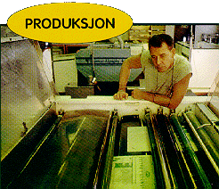
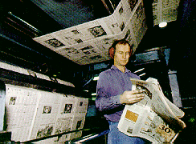
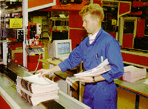

Kopist Jan Ekevik overvåker nøye den siste kjemiske finpuss av trykkplatene før de blir festet til sylinderne i Aftenpostens trykkeri.

Pressen er i gang, og de første avisene som kommer ut kontrolleres av trykker Roar Martin Stokkan.

Pakkeriinspektør Ivar Gisleberg overvåker pakkingen av dagens aviser, slik at alle bud og avisutsalg få riktig antall.
Slik lages Aftenposten
[Innhold] [Info]
[Aftenposten hjemmeside] [Til Ung hovedside]